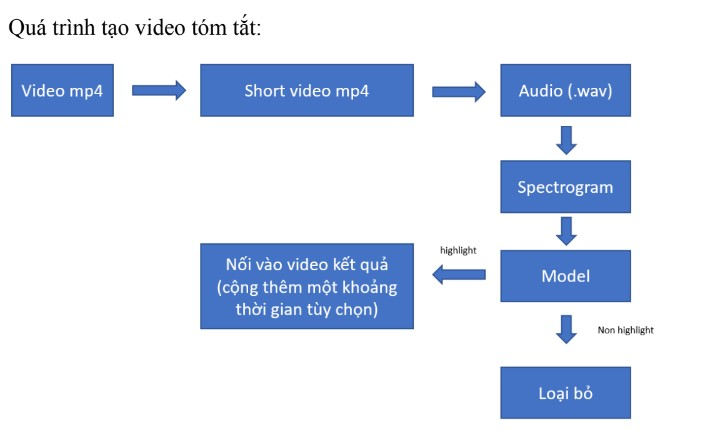
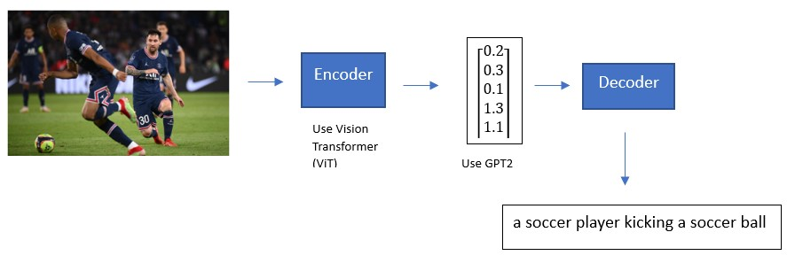
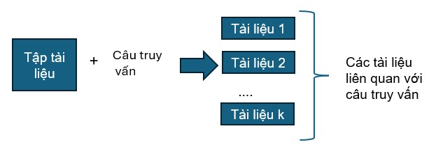
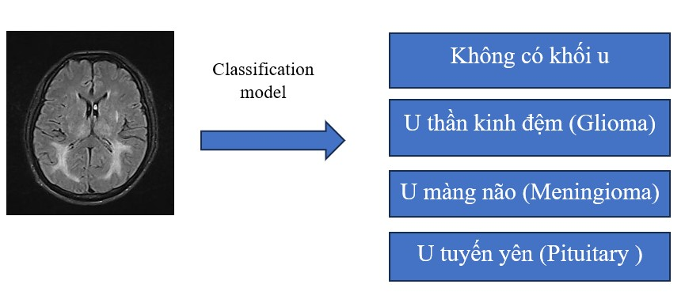
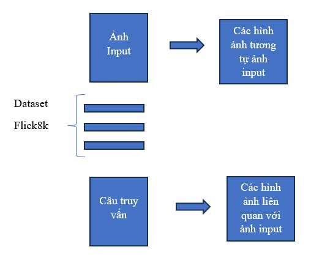
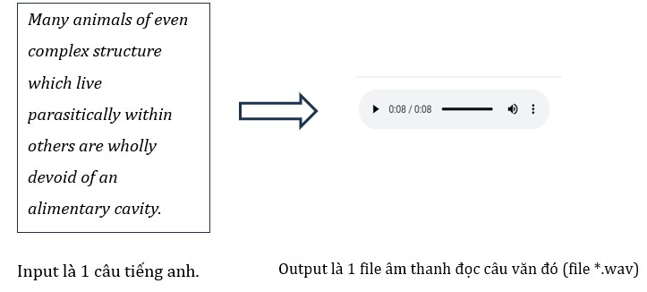
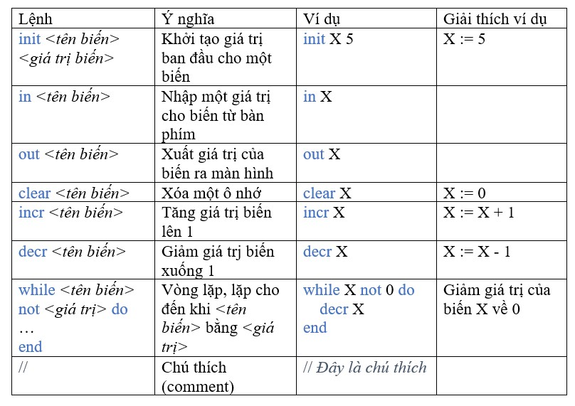

Nguyễn Tam Điệp (2001), chuyên ngành Khoa học Máy tính, trường Đại học Công nghệ Thông tin - Đại học Quốc gia TP.HCM
Contact me at email: tamdiepnp@gmail.com
My Projects:
Ứng dụng Machine Learning để tóm tắt video trận đấu bóng đá
Tóm tắt một video trận đấu bóng đá dài hơn 90 phút thành 1 video ngắn tổng hợp các diễn biến chính của trận đấu gồm các tình huống ghi bàn, suýt ghi bàn, đá phạt góc, phản công nhanh. Phương pháp được sử dụng ở đây là chia một video thành những đoạn video ngắn dài 5s - 10s. Sử dụng một mô hình classification đã được huấn luyện từ trước để kiểm tra mỗi đoạn video ngắn đó có phải diễn biến chính của trận đấu hay không. Cuối cùng tổng hợp Lại các video ngắn được phân loại là diễn biến chính để có được một video tóm tắt. Chi tiết xem thêm tại đây.

Phát sinh câu mô tả ảnh sử dụng mô hình Transformer (Image Captioning Using Transformer)
Sử dụng kiến trúc mô hình Encoder - Decoder, với encoder được sử dụng là mô hình Vision Transformer, với decoder được sử dụng là một mô hình pre-trained language (GPT2). Chi tiết xem thêm tại đây.

Truy xuất văn bản sử dụng mô hình Vector Space và mô hình Latent Semantic Index (Document Retrieval Using Vector Space and Latent Semantic Index)
Với một tập các tài liệu cho trước, tìm kiếm các tài liệu trong tập tài liệu đó liên quan với một câu truy vấn. Chi tiết xem thêm tại đây.

Sử dụng mạng CNN để phát hiện, chẩn đoán u não trong ảnh chụp cộng hưởng từ (MRI) não bộ (Brain tumor diagnosis and classification using Convolutional Neural Networks)
Sử dụng mạng CNN để dự đoán một bức ảnh chụp cộng hưởng từ não bộ có chứa 1 trong số các loại u như u thần kinh đêm, u màng não, u tuyến yên hay không. Chi tiết xem thêm tại đây.

Hệ thống truy xuất hình ảnh trên bộ dữ liệu flickr8k (Image Retrieval System on Flickr8k dataset)
Xây dựng một hệ thống truy xuất ảnh trên bộ dữ liệu Flickr8k với 2 tác vụ: Tìm kiếm các hình ảnh tương tự với 1 ảnh đã cho (sử dụng mô hình CNN ResNet50 kết hợp với thư viện FAISS) và tìm kiếm các hình ảnh liên quan với 1 câu truy vấn văn bản (sử dụng mô hình CLIP kết hợp với thư viện FAISS). Chi tiết xem thêm tại đây.

Ứng dụng xử lý ngôn ngữ tự nhiên vào phát triển mô hình gán nhãn từ loại tiếng Anh
Với một câu tiếng Anh cho trước, sử dụng mô hình gán nhãn từ loại để xác định từ loại của mỗi từ trong câu (Nhãn từ loại được lấy từ bộ nhãn từ loại Penn Treebank). Chi tiết xem thêm tại đây.
Sử dụng React Native để xây dựng ứng dụng quản lý ghi chú (note app)
Chi tiết xem thêm tại đây.
Tổng hợp tiếng nói - Chuyên đổi văn bản tiếng Anh thành tiếng nói sử dụng mô hình Tacotron 2 (English Speech Synthesis Using Tacotron 2 Model)

Chi tiết xem thêm tại đây.
Xây dựng trình biên dịch cho ngôn ngữ lập trình Bare Bone (BareBone Compiler)
Ngôn ngữ lập trình BareBone là ngôn ngữ lập trình rất đơn giản chỉ với một số câu lệnh như sau:

Mục tiêu của project này là sử dụng C++ để xây dựng trình biên dịch để biên dịch một chương trình viết bằng BareBone sang file thực thi có thể chạy được. Chi tiết xem thêm tại đây.